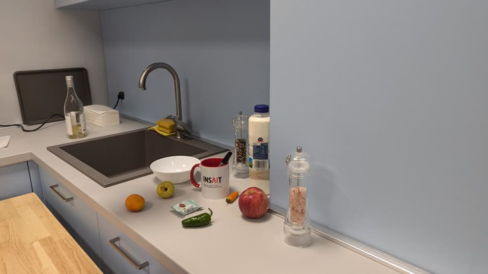
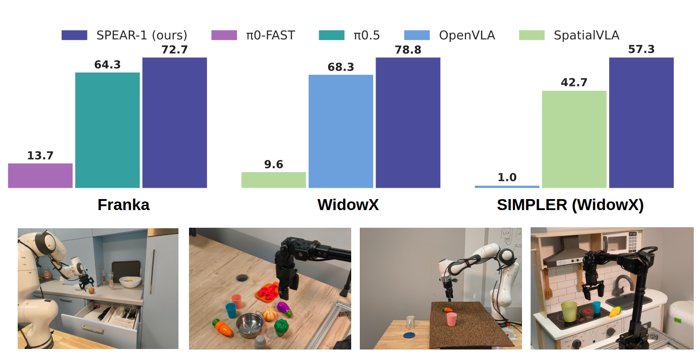

SPEAR-1 on a Franka arm in a kitchen, with no fine-tuning for this environment. The clips show it putting the
spoon in the drawer, closing the drawer, putting the marker in the cup and wiping a stain.
TL;DR: We teach a 3B vision-language model to locate objects in 3D from a single image, using
non-robotic images with 3D annotations that are cheap to make. We then train a robot policy on top of it. The resulting model,
SPEAR-1, matches or beats π0-FAST and π0.5 while using 20× fewer robot demonstrations. The weights are open.
Abstract
Robotic Foundation Models (RFMs) hold great promise as generalist, end-to-end systems for robot control.
Yet their ability to generalize across new environments, tasks, and embodiments remains limited. We argue that a major
bottleneck lies in their foundations: most RFMs are built by fine-tuning internet-pretrained Vision-Language Models
(VLMs). However, these VLMs are trained on 2D image-language tasks and lack the 3D spatial reasoning inherently required
for embodied control in the 3D world. Bridging this gap directly with large-scale robotic data is costly and difficult to
scale. Instead, we propose to enrich easy-to-collect non-robotic image data with 3D annotations and enhance a pretrained
VLM with 3D understanding capabilities. Following this strategy, we train SPEAR-VLM, a 3D-aware VLM that infers object
coordinates in 3D space from a single 2D image. Building on SPEAR-VLM, we introduce our main contribution,
SPEAR-1: a robotic foundation model that integrates grounded 3D perception with language-instructed embodied
control. Trained on ∼45M frames from 24 Open X-Embodiment datasets, SPEAR-1 outperforms or matches state-of-the-art
models such as π0-FAST and π0.5, while it uses 20× fewer robot demonstrations. This
carefully-engineered training strategy unlocks new VLM capabilities and as a consequence boosts the reliability of
embodied control beyond what is achievable with only robotic data. We make our model weights and 3D-annotated datasets
publicly available.
Video
The SPEAR-1 overview video (80 s, with sound). Clips marked “Autonomous execution” are SPEAR-1
controlling the robot, played at 4× speed.
A flat view of a 3D world
A robotic foundation model takes camera images and an instruction in plain language, and outputs the motor commands
that complete the task. Unlike today's specialized robots, it should work in new environments and on different robots
without being programmed again for every task.
Most of these models are vision-language-action models (VLAs). They are built from three parts:
a large language model, which brings reasoning and knowledge about the world;
a vision module that understands 2D images and, together with the language model, forms a vision-language model (VLM);
a control module that turns the VLM's understanding into 3D positions for the robot to move to.
VLAs start from a pretrained VLM. These VLMs recognize and describe scenes very well, but they are essentially 2D. They do
not know how far apart two objects are or how big they are. A robot needs exactly this 3D geometry to act. In practice, VLAs
can look impressive in short videos and then fail as soon as object positions, layouts or backgrounds change.
SPEAR-1 is built to close this gap.
How SPEAR-1 works
We train SPEAR-1 in two stages. First, we extend a VLM from flat 2D pixels to the 3D world using openly available,
non-robotic data. This gives SPEAR-VLM. Then we attach a control module and train the whole model to imitate robot
movements recorded with human teleoperation. Each stage uses data that is more expensive to collect than the one before.
Stage 0 · pretrained
PaliGemma VLM
Learns from web images and text. It can describe what is in an image, but only in 2D.
Data: web image-text pairs · cost low
Stage 1
SPEAR-VLM
Adds a monocular depth encoder (MoGe) and learns to answer 3D questions: object coordinates, 3D boxes and distances.
Data: ~200k non-robotic images with 3D labels · cost medium
Stage 2
SPEAR-1
Adds an action expert trained with flow matching to imitate teleoperated robot demonstrations.
Data: ~45M frames from 24 Open X-Embodiment datasets · cost high
Stage 1: teaching a VLM about 3D (SPEAR-VLM)
VLMs such as GPT-5, Gemini or Claude are pretrained on web data, with tasks like answering questions about an image
or finding an object in it. That knowledge stays in the 2D image plane. We start from a smaller, 3-billion-parameter VLM
and add a depth model that estimates how far every pixel is from the camera. We then train it to answer geometric
questions such as “Provide the 3D bounding box coordinates of the bowl” or “Estimate the x, y, z distance
between the mug and the spoon”. To answer, SPEAR-VLM has to find the object from its description, estimate its 3D
coordinates and reason about distances between objects.

Input: a single RGB image
Output: the 3D box of the cup, shown in a 3D view of the scene
SPEAR-VLMThe 3D bounding box of the cup has coordinates: [0.3, 0.7, 0.24], [-0.05, 0.1, 0.24], …
SPEAR-VLM answers 3D questions about a single image with coordinates. This kind of training data is much cheaper than
robot data. With only 200k 3D-annotated images, SPEAR-1 outperforms robot models trained on more than 900M additional
frames of robot demonstrations.
Stage 2: from 3D understanding to actions (SPEAR-1)
SPEAR-VLM outputs language. To control a robot, we attach a control module that outputs motor commands and 3D target
positions in real time. We train it with flow matching, a variant of diffusion models, to imitate trajectories that people
recorded by teleoperating robots through each task many times. Because the backbone already understands 3D, SPEAR-1
needs about 20× fewer robot demonstrations than comparable models.
A robot trajectory, shown as the gripper's path (blue) in a 3D view of the scene. This is the kind of output Stage 2 learns to produce.
Results
All evaluations are zero-shot: we fine-tune neither SPEAR-1 nor the baselines for the test tasks or environments.
On a Franka arm in the DROID setup we compare with Physical Intelligence's
π0-FAST and
π0.5. Both are trained on at least 900M
more robot frames, collected in more diverse environments, than SPEAR-1's ~45M, but neither uses 3D pretraining.
π0-FAST and π0.5 are not available for WidowX, so on that robot we compare with OpenVLA, a model about
twice SPEAR-1's size, and SpatialVLA.

Top: average task progress (%) on the real Franka and WidowX robots, and success rate (%) in the SIMPLER WidowX
simulation. Bottom: sample evaluation environments.
Setup
SPEAR-1
π0.5
π0-FAST
OpenVLA
SpatialVLA
Franka (DROID), realavg. task progress, 5 tasks, 75 trials per model
72.7
64.3
13.7
–
–
WidowX (Bridge), realavg. task progress, 5 tasks, 60 trials per model
Numbers are from the paper (arXiv v2). Task progress gives partial credit for each step of a task. Each task is run from
several starting layouts, three trials each. SpatialVLA's SIMPLER result is taken from its paper.
On Franka, SPEAR-1 reaches about 5× the task progress of π0-FAST, which shares its π0-style
architecture. It also matches π0.5, which adds architectural improvements and high-level subtask prediction and
is trained in at least 5× more environments. On WidowX, SPEAR-1 outperforms OpenVLA, which shows that it carries
over to a different robot. Together, these results suggest that 3D knowledge about the world can substitute for a large
share of robot data.
Franka rollouts
VLAs often fail when a target object moves, for example when the carrot sits left or right of the robot in
“Put the carrot on the blue plate”. We move target objects both horizontally and vertically. Some tasks need fine 3D
positioning: in “Put the marker in the cup” the marker lies flat on the table, and the trial only succeeds if it ends up
inside the cup.
Wipe the stain
Put the carrot on the blue plate
Close the drawer
Put the marker in the cup
Put the spoon in the drawer
Cover the pot
WidowX rollouts
The same SPEAR-1 recipe on a different arm, the WidowX, set up like Bridge V2 with a single external camera.
Put the piece on the chessboard
Put the corn between the cups
Put the eggplant in the pot
Put the pink cup on the blue cup
Put the pink cup on the blue plate
Limitations and next steps
The 3D pretraining is not well suited to deformable objects or objects with complex shapes. Other 3D priors, such
as rotation estimation or collision detection, could capture their geometry better.
The 3D box labels come from MoGe's affine-invariant depth, so they are not in metric space. Ground-truth point clouds
or metric depth estimators could fix this.
We do not yet know how robot performance scales with the amount and quality of 3D pretraining data.
SPEAR-1 still needs fine-tuning on a new robot embodiment to work well. It remains to be seen how it compares to
models such as π0.5 across many more tasks and environments.
More broadly, robotic foundation models still have a long way to go: long-horizon planning, autonomous
self-improvement and completing unseen tasks. We believe other cheap sources of data can bring gains similar to those
3D data brought here. If you are interested in collaborating, please reach out.
@misc{nikolov2026spear1scalingrobotdemonstrations,
title={SPEAR-1: Scaling Beyond Robot Demonstrations via 3D Understanding},
author={Nikolay Nikolov and Giuliano Albanese and Sombit Dey and Aleksandar Yanev and Luc Van Gool and Jan-Nico Zaech and Danda Pani Paudel},
year={2026},
eprint={2511.17411},
archivePrefix={arXiv},
primaryClass={cs.RO},
url={https://arxiv.org/abs/2511.17411},
}